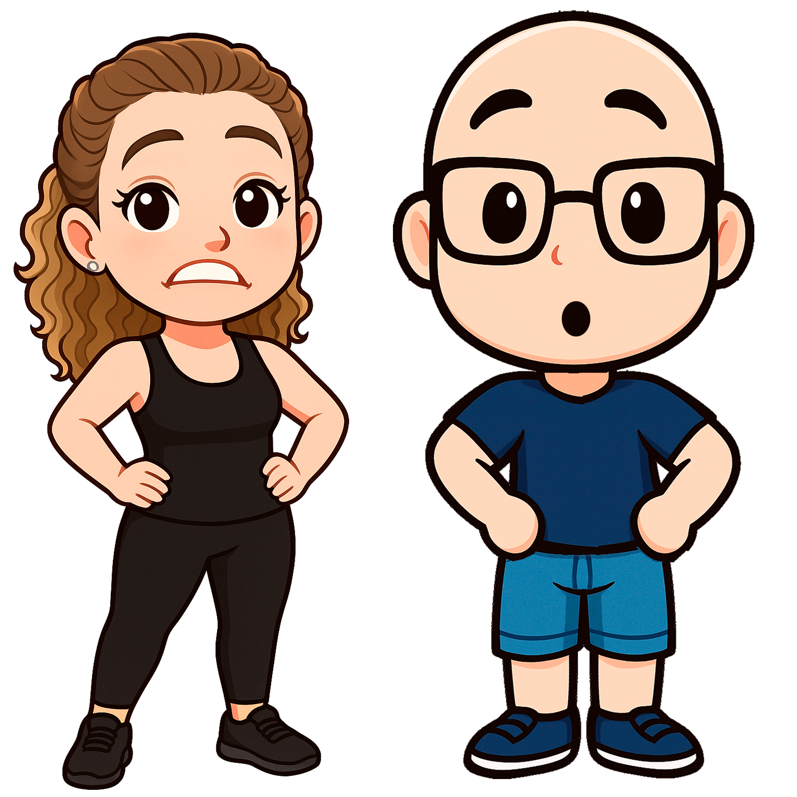

Paracasa Paraca
Version 2.1
© Mikomedes 2025

¡Chicos, rápido! El gato Paraca y sus amigos, han decidido que la forma más *cool* de viajar es lanzándose de la azotea con paracaídas. El problema es que, después de tantos caprichos y galletas, ¡están más redondos que la luna llena!
Necesitamos vuestra ayuda. Tenéis que atraparlos antes de que aterricen como tortitas. Usa el ratón o tu dedo para moverte de lado a lado y salvar a estos intrépidos, aunque gordos, aventureros. ¡Daros prisa!
Elige tu personaje
Nivel: 1
Vidas: